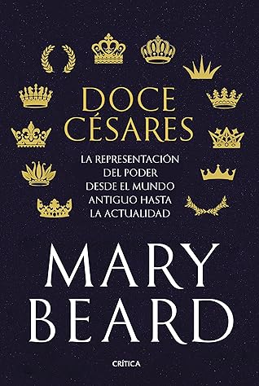

Doce césares: La representación del poder desde el mundo antiguo hasta la actualidad
Reseña por Jorge I. Zuluaga

Ver reseña en GoodReads (necesita cuenta)
Aproveché los inútiles días del fin de 2021 y comienzo del 2022 para sentarme muy juicioso a leerlo. Pude terminarlo en dos sentadas (más del 25% del libro son notas) y la verdad quedé triste.
Después de toda la expectativa creada con el libro (que se lanzó con mucha pompa justo a finales de 2021) y también de pagar un precio relativamente alto por él (casi el doble de lo que vale un libro de dimensiones similares), me encontré (como posiblemente lo van a hacer muchos de lo que lo lean con una gran expectativa como yo) con un texto relativamente técnico y árido de historia del arte, producto de un trabajo de investigación de su autora. No es el tipo de divulgación que esperaba.
Para ahorrarles la decepción voy a resumir el libro en unas pocas frases: este no es un libro sobre los emperadores Romanos, ni sobre sus vidas, ni sobre los convulsos hechos que rodearon la Roma autocrática de principios de nuestra era.
"Doce Césares" es un libro (bastante académico para el lector casual) de historia del arte y en particular sobre las representaciones que, especialmente desde el renacimiento Europeo (siglo xv), artistas de todos los tiempos realizaron de las figuras muy influyentes de los Césares, los doce Césares del título, cuyas vidas describe Suetonio en su reconocido clásico (y que será el libro que lea a continuación y con el que debí realmente empezar).
"Pero, si es tan decepcionante ¿por qué lo leyó completo?", me preguntará el lector de esta reseña.
Dos respuestas: 1) porque no acostumbro abandonar ningún libro, por pesado que sea (obviamente no es una regla escrita en piedra, he abandonado y abandonaré libros, pero como algo excepcional); y 2) porque el libro no es completamente "malo" (casi ningún libro preparado con celo por su autor y editores, lo es) o completamente incomprensible.
Por el lado positivo hay que señalar que la edición de Crítica (que fue la que adquirí y leí) es simplemente impecable. Para ser justos, como objeto, ¡el libro si vale la inversión!. El papel es de buena calidad, grueso y blanco (ese tipo de papel que uno sabe nunca se tornará amarillo como muchas de las ediciones de bolsillo que adquirimos los más tacaños).
El texto esta profusamente ilustrado con imágenes de las obras de arte que se describen en las historias que Mary Beard teje alrededor de la influencia de los Césares en el arte (en especial en el retrato) del renacimiento y la ilustración. Las imágenes son a todo color y pueden verse muchos de los detalles importantes. Todas ellas vienen mezcladas con el texto en lugar de aparecer en páginas separadas (una práctica que haría muy incómoda la lectura de un libro como este).
El contenido es también impecable. Mi decepción no está relacionada con el hecho de que sea correcto o no (¡ni más faltaba! ¿quién soy yo para juzgarlo?); sino con el hecho de que no aporta mucha información apasionante o relevante sobre el tema del que "parece" tratar y por el que la mayoría lo adquirimos: la vida de los Césares.
Por supuesto se aprenden muchas cosas al leer con cuidado las casi 350 páginas del texto. Y también sobre la vida de los doce Césares, aunque a fuerza de repetir una y otra vez algunas de las historias sobre ellas recogidas en la obra de Suetonio y que fueron inspiración para las obras de arte de las que si trata el texto.
Hay que ser de "palo" para no sorprenderse (spoiler altert) por el hecho, revelado por las fuentes académicas y por la misma Beard (una de esas fuentes), de que la imagen que hoy tenemos de los 12 Césares, de sus rostros en particular podría ser falsa.
Incluso la imagen del mismísimo Julio Cesar, a las que nos hemos acostumbrado en tantas representaciones en la historia del arte y la cultura pop, es incierta. Aparte de su escueta imagen en monedas de su tiempo y de cuyo origen no hay duda, no hay casi ningún busto del Dictador que pueda certificarse como esculpido en su tiempo o esculpido basándose en la imagen del personaje real.
Y si eso pasa con Julio Cesar, ya podrán imaginarse lo que pasa con los semblantes de otros emperadores o peor aún de las mujeres en sus vidas. Ese es el tema central justamente del texto.
El trabajo de Beard, que siempre ha sido una lectora muy juiciosa de la evidencia arqueológica (y ahora descubro, también de la artística), es impecable. Su análisis del papel que la imagen de los Césares tuvo en la política a lo largo de los últimos 2.000 años, su rol como medios de crítica social y política desde el arte, en tiempos en los que no habían otros medios para expresarse, es muy original y reveladora.
En fin, el libro es decepcionante, por las inadecuadas expectativas, pero muy informativo.
Claro que no hay que culpar de la decepción a Mary Beard o a los editores.
La verdad es que después de leer el libro y releer la descripción o la contraportada, se da uno cuenta de que el contenido es justo lo que se promete desde el principio.
¿Qué es entonces lo que hace que muchos de quiénes como yo, aficionado a la historiografía, la arqueología y los estudios clásicos, caigamos en la trampa de un libro como "Doce Césares"?
Puede ser la fama de divulgadora de su autora. Y es que todo hay que decirlo: Mary Beard es toda una personalidad televisiva, una experta que, como presentadora de todos sus documentales, sorprende por su carisma y capacidad para comunicar a un público muy amplio, contenidos normalmente considerados densos. Para mi, Mary Beard es para la historiografía lo que Carl Sagan fue para las ciencias espaciales.
Ya me ha pasado, con este libro, en dos ocasiones. Atraído por el nombre de la autora he adquirido y leído libros que (siendo más costoso de lo habitual) no están precisamente dirigidos a un aficionado como yo.
Pueden ser entonces los editores.
Es claro que un libro que es resultado de un juicioso trabajo de investigación de una experta clasicista, no debería ser promocionado y vendido como se hace: como un libro de divulgación, apto para todo público.
Mi opinión es que algunos de los libros de Mary Beard los han vendido por lo que no son, lucrándose ciertamente de su fama como divulgadora.
No quiero que esto suene a un juicio moralizante, sino más bien una advertencia; o por lo menos lo es para mí: es claro que para el próximo libro de la Beard, seré mucho más juicioso al verificar su contenido.